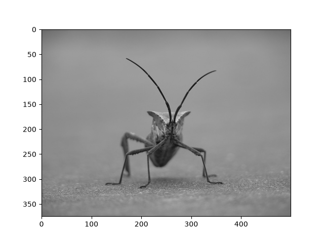
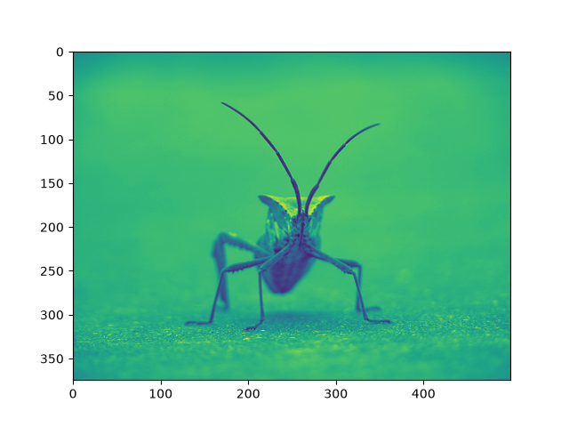
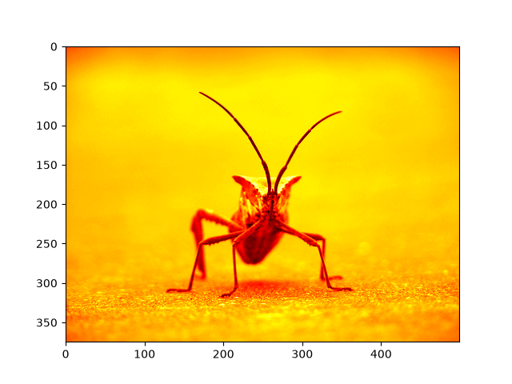
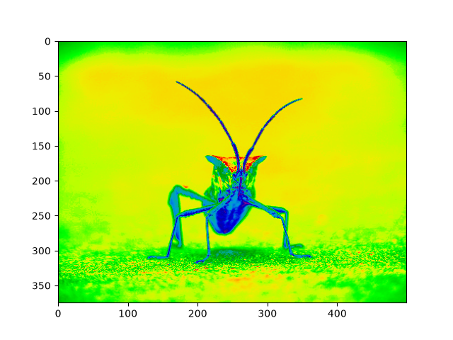
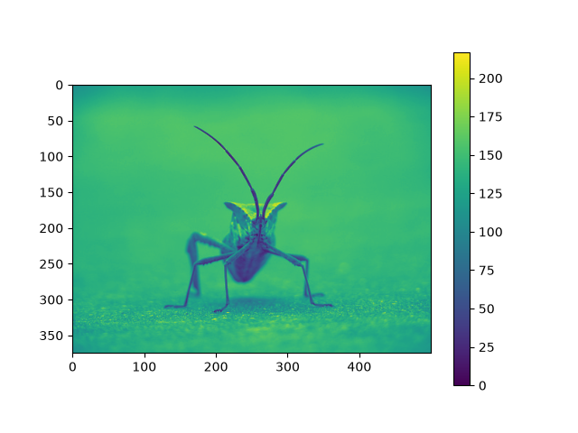
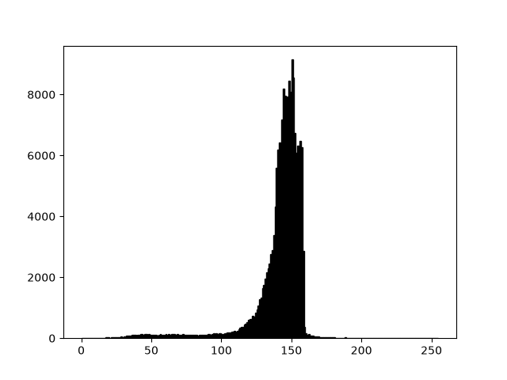
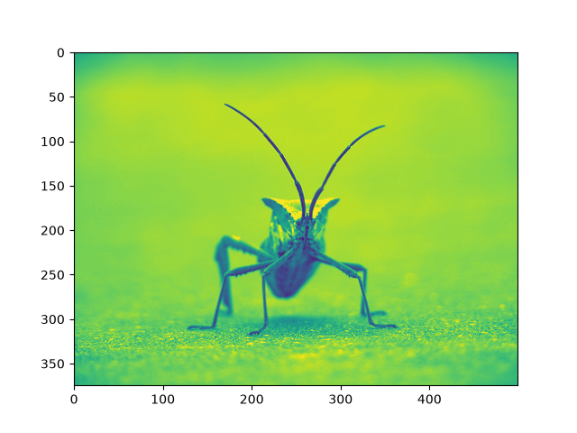
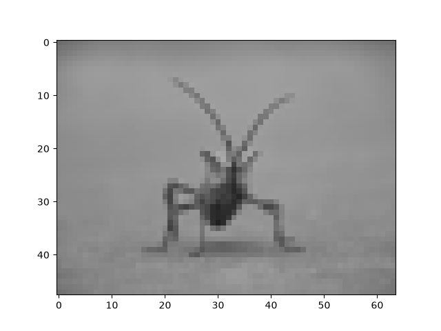

Note
Go to the end to download the full example code.
Image tutorial#
This tutorial will use Matplotlib's implicit plotting interface, pyplot. This interface maintains global state, and is very useful for quickly and easily experimenting with various plot settings. The alternative is the explicit, which is more suitable for large application development. For an explanation of the tradeoffs between the implicit and explicit interfaces see Matplotlib Application Interfaces (APIs) and the Quick start guide to start using the explicit interface. For now, let's get on with the implicit approach:
from PIL import Image
import matplotlib.pyplot as plt
import numpy as np
Importing image data into Numpy arrays#
Matplotlib relies on the Pillow library to load image data.
Here's the image we're going to play with:
It's a 24-bit RGB PNG image (8 bits for each of R, G, B). Depending on where you get your data, the other kinds of image that you'll most likely encounter are RGBA images, which allow for transparency, or single-channel grayscale (luminosity) images. Download stinkbug.png to your computer for the rest of this tutorial.
{kind=link}
We use Pillow to open an image (with PIL.Image.open), and immediately
convert the PIL.Image.Image object into an 8-bit (dtype=uint8) numpy
array.
img = np.asarray(Image.open('../../doc/_static/stinkbug.png'))
print(repr(img))
array([[[104, 104, 104],
[104, 104, 104],
[104, 104, 104],
...,
[109, 109, 109],
[109, 109, 109],
[109, 109, 109]],
[[105, 105, 105],
[105, 105, 105],
[105, 105, 105],
...,
[109, 109, 109],
[109, 109, 109],
[109, 109, 109]],
[[107, 107, 107],
[106, 106, 106],
[106, 106, 106],
...,
[110, 110, 110],
[110, 110, 110],
[110, 110, 110]],
...,
[[112, 112, 112],
[111, 111, 111],
[110, 110, 110],
...,
[116, 116, 116],
[115, 115, 115],
[115, 115, 115]],
[[113, 113, 113],
[113, 113, 113],
[112, 112, 112],
...,
[115, 115, 115],
[114, 114, 114],
[114, 114, 114]],
[[113, 113, 113],
[115, 115, 115],
[115, 115, 115],
...,
[114, 114, 114],
[114, 114, 114],
[113, 113, 113]]], shape=(375, 500, 3), dtype=uint8)
Each inner list represents a pixel. Here, with an RGB image, there are 3 values. Since it's a black and white image, R, G, and B are all similar. An RGBA (where A is alpha, or transparency) has 4 values per inner list, and a simple luminance image just has one value (and is thus only a 2-D array, not a 3-D array). For RGB and RGBA images, Matplotlib supports float32 and uint8 data types. For grayscale, Matplotlib supports only float32. If your array data does not meet one of these descriptions, you need to rescale it.
Plotting numpy arrays as images#
So, you have your data in a numpy array (either by importing it, or by
generating it). Let's render it. In Matplotlib, this is performed
using the imshow() function. Here we'll grab
the plot object. This object gives you an easy way to manipulate the
plot from the prompt.
imgplot = plt.imshow(img)

You can also plot any numpy array.
Applying pseudocolor schemes to image plots#
Pseudocolor can be a useful tool for enhancing contrast and visualizing your data more easily. This is especially useful when making presentations of your data using projectors - their contrast is typically quite poor.
Pseudocolor is only relevant to single-channel, grayscale, luminosity images. We currently have an RGB image. Since R, G, and B are all similar (see for yourself above or in your data), we can just pick one channel of our data using array slicing (you can read more in the Numpy tutorial):
lum_img = img[:, :, 0]
plt.imshow(lum_img)

Now, with a luminosity (2D, no color) image, the default colormap (aka lookup table, LUT), is applied. The default is called viridis. There are plenty of others to choose from.
plt.imshow(lum_img, cmap="hot")

Note that you can also change colormaps on existing plot objects using the
set_cmap() method:
imgplot = plt.imshow(lum_img)
imgplot.set_cmap('nipy_spectral')

There are many other colormap schemes available. See the list and images of the colormaps.
Color scale reference#
It's helpful to have an idea of what value a color represents. We can do that by adding a color bar to your figure:

Examining a specific data range#
Sometimes you want to enhance the contrast in your image, or expand
the contrast in a particular region while sacrificing the detail in
colors that don't vary much, or don't matter. A good tool to find
interesting regions is the histogram. To create a histogram of our
image data, we use the hist() function.

Most often, the "interesting" part of the image is around the peak, and you can get extra contrast by clipping the regions above and/or below the peak. In our histogram, it looks like there's not much useful information in the high end (not many white things in the image). Let's adjust the upper limit, so that we effectively "zoom in on" part of the histogram. We do this by setting clim, the colormap limits.
This can be done by passing a clim keyword argument in the call to
imshow.
plt.imshow(lum_img, clim=(0, 175))

This can also be done by calling the
set_clim() method of the returned image
plot object.
imgplot = plt.imshow(lum_img)
imgplot.set_clim(0, 175)

Array Interpolation schemes#
Interpolation calculates what the color or value of a pixel "should" be, according to different mathematical schemes. One common place that this happens is when you resize an image. The number of pixels change, but you want the same information. Since pixels are discrete, there's missing space. Interpolation is how you fill that space. This is why your images sometimes come out looking pixelated when you blow them up. The effect is more pronounced when the difference between the original image and the expanded image is greater. Let's take our image and shrink it. We're effectively discarding pixels, only keeping a select few. Now when we plot it, that data gets blown up to the size on your screen. The old pixels aren't there anymore, and the computer has to draw in pixels to fill that space.
We'll use the Pillow library that we used to load the image also to resize the image.
img = Image.open('../../doc/_static/stinkbug.png')
img.thumbnail((64, 64)) # resizes image in-place
imgplot = plt.imshow(img)

Here we use the default interpolation ("nearest"), since we did not
give imshow() any interpolation argument.
Let's try some others. Here's "bilinear":
imgplot = plt.imshow(img, interpolation="bilinear")
and bicubic:
imgplot = plt.imshow(img, interpolation="bicubic")
Bicubic interpolation is often used when blowing up photos - people tend to prefer blurry over pixelated.
Total running time of the script: (0 minutes 11.997 seconds)